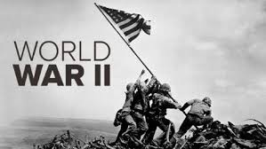

Ascending to control in a monetarily and politically shaky Germany, Adolf Hitler Adolf Hitler, head of the Nazi Party, rearmed the country and marked vital arrangements with Italy and Japan to additional his desire of global control. Hitler's attack of Poland in September 1939 drove Great Britain and France to announce war on Germany, denoting the start of World War II. Throughout the following six years, the contention would take more lives and obliterate more land and property around the world than any past war. Among the assessed 45-60 million individuals slaughtered were 6 million Jews killed in Nazi death camps as a component of Hitler's merciless "Last Solution," presently known as the Holocaust.
